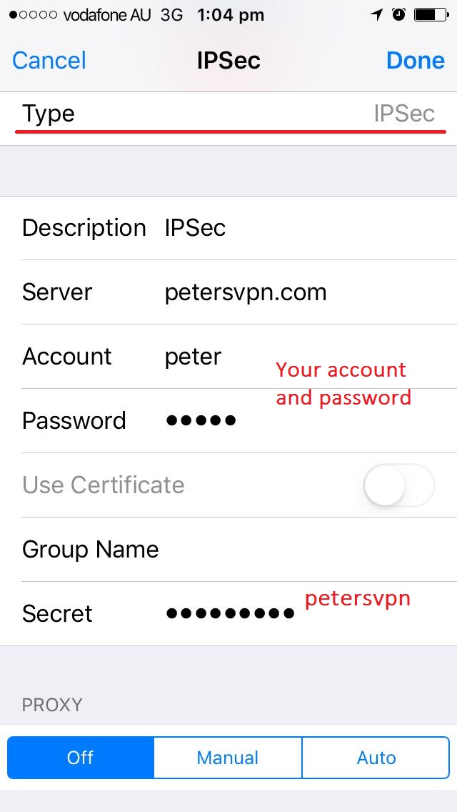
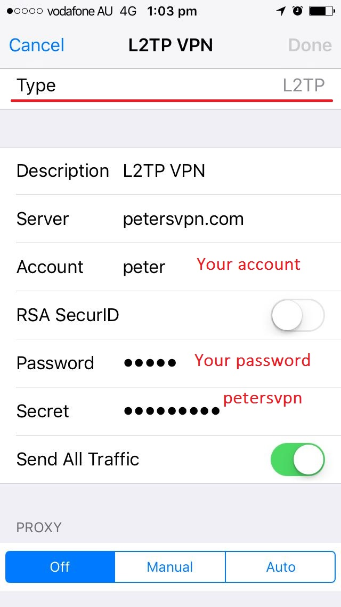
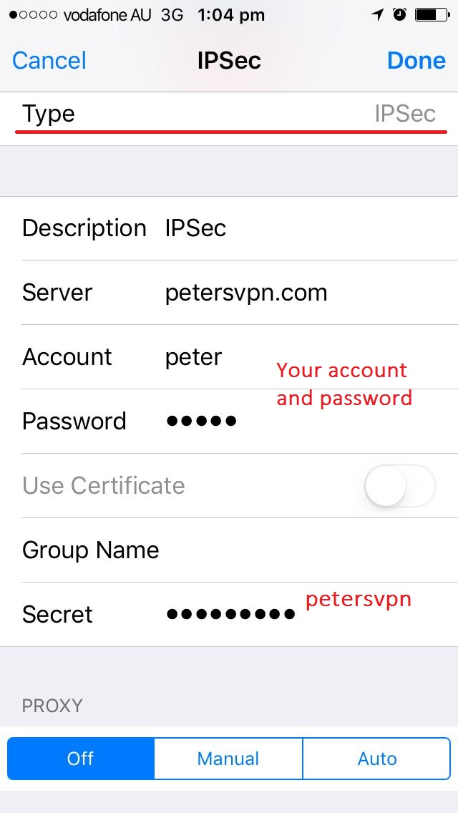
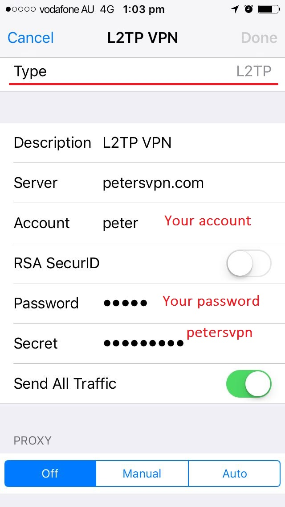

IPSec： 
L2TP： 
Connect：

iPhone/iPad用户进入设置/通用/VPN, 新建VPN配置，选择IPSec or L2TP并填写下面信息。
VPN类型: IPSec (Recommended) or L2TP
描述: 随意
服务器: usw.petersvpn.com
帐号: [your account]
密码: [your password]
密钥: petersvpn
其它: 默认设置
配置截图:
IPSec：

L2TP：

Connect：